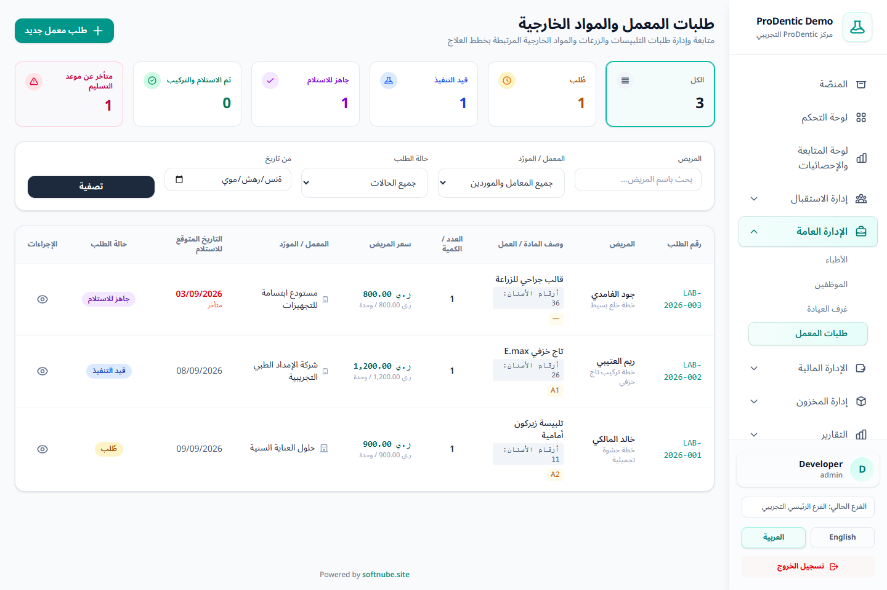

Built around a real clinic day
Clearer decisions.
Clearer decisions.
Connected care.
ProDentic carries each patient from booking and diagnosis through treatment, lab work, and collection—keeping clinical and financial work in one shared context.
Clear Arabic interface
Role-based access
PDF and Excel exports

✓Real interface with synthetic demo data
One connected workflow
The patient journey never disappears between screens
Each stage builds on the last, so the right information appears in context without repeated entry or unnecessary searching.
Register the patient
One record for identity, medical history, and attachments.
Schedule the visit
Calendar, attendance states, and a structured waiting list.
Document findings
Multi-condition dental charting, surfaces, and root canals.
Build the plan
Services, sessions, dentist, room, cost, and progress.
Deliver and collect
Lab orders, invoices, installments, and partial payments.
Review performance
Operational and financial analytics with precise filters.
Practical updates
New capabilities designed around everyday detail
These updates connect clinical delivery, collections, and follow-up instead of simply adding isolated screens.
Read clinic performance from one focused view
Patient, visit, revenue, expense, receivable, and inventory indicators—with date controls that help you move from a number to the work behind it.
Track work from request to delivery
Connect each order to its patient, plan, and supplier, then track status, cost, due date, and overdue work.
Flexible schedules, visible commitments
Create automatic or custom schedules, collect full or partial payments, and keep overdue balances visible.
Multiple conditions and root canals
Record more than one condition per tooth, affected surfaces, and canal details including length, size, and notes.
Every payment knows what it covered
Allocate payments to invoice items and report on collections, delivered work, revenue, and commissions with clearer status.
A structured move through Excel
Templates for patients, balances, services, inventory, and appointments—with validation before an import is committed.

01 · Clinical care
A clinical record that explains the tooth—not just a color on a chart
The dental chart gives the dentist a structured place for diagnoses, surfaces, canal measurements, and notes, with a history that makes prior changes easy to review.
- Adult and pediatric FDI charts.
- Multiple active conditions on one tooth.
- Up to ten root canals with per-canal details.

02 · Coordinated delivery
Lab work stays connected to the treatment plan
Create an order in the context of a treatment plan, specify the lab work and cost, then follow each stage through receipt and patient delivery.
- Clear requested, in-progress, ready, received, and delivered states.
- Overdue lab alerts on the dashboard.
- Printable order details and a status timeline.

03 · Organized collections
The payment schedule moves with the treatment plan
Turn the remaining balance into clear commitments for the patient and front desk, and retain the history of every collection instead of tracking installments elsewhere.
- Automatic distribution or custom amounts and dates.
- Full and partial payments with immediate status updates.
- Filters by patient, dentist, due date, and status.

04 · Data-informed decisions
Start with the question, then drill into the details that answer it
Analytics provides the overview, while reports support multi-select filters for dentists, patients, services, and payment methods, followed by share-ready exports.
- Compare revenue, expenses, and net performance.
- Review collections, receivables, and daily payment detail.
- Export PDF and Excel using the selected filters.
A complete working system
Everything the team needs, without losing patient context
Tools are shown according to each user’s permissions, keeping the interface focused on the work in front of them.
Patient record
Identity, history, attachments, plans, invoices, and payments in one place.
Appointments & calendar
Book, edit, track attendance, and filter by dentist, room, and date.
Waiting list
Manage turns, call patients, and provide a clear reception display.
Dental chart
Conditions, surfaces, canals, notes, and history for adults and children.
Plans & sessions
Services, costs, dentists, rooms, sessions, and documented progress.
Lab orders
Plan-linked requests with supplier, cost, due date, and workflow status.
Billing & payments
Line items, discounts, payment methods, and precise service allocation.
Treatment installments
Due schedules, partial collection, and visibility into overdue balances.
Financial reporting
Revenue, collections, expenses, and commissions with rich filters.
Inventory
Items, suppliers, stock-in, stock-out, movement, and reorder alerts.
Team & resources
Dentists, staff, rooms, and the operational records around them.
Access & audit
Granular roles, sensitive-action history, and controlled settings.
Subscription plans
Plans shaped around the way your clinic works
Select the closest fit, then share a few clinic details so the demo can follow your needs instead of a generic script.
A structured start
Core day-to-day workflows for a team bringing patient records, appointments, treatment, and collection together.
- Patient records and medical history
- Appointments and calendar
- Dental chart and treatment plans
- Core billing and payments
More connected operations
Add the operational and financial follow-up a team needs as everyday detail expands.
- Everything in Basic
- Installments and lab orders
- Inventory, suppliers, and requests
- Reports, permissions, and audit history
Control and decisions
Deeper tools for measurement, analysis, financial policy, and efficient control of complex detail.
- Everything in Standard
- Analytics and performance overview
- Advanced finance and commission policies
- Data migration and expanded reporting
A useful first message
Add your clinic details before opening WhatsApp
Your clinic name, dentist and room counts, preferred option, and first priority will be placed in the message automatically.
Interactive tour
See the real interface before you decide
These screens come from a working demo with synthetic data, so you see the product in use—not design mockups.
Control without friction
The right information reaches the right person
Permissions, audit history, and financial controls help the team move quickly while keeping sensitive decisions traceable.
Before you begin
Frequently asked questions
Direct answers to what a clinic team usually needs while evaluating the product.
Are these screenshots from the real product?
Yes. They come from the ProDentic demo and use synthetic names and figures created for demonstration. Counts may change as demo data is refreshed.
Can each user’s access be tailored?
Yes. Screen and action access is role- and permission-based, so team members can receive the tools they need without unrelated functions.
Does ProDentic support partial payments and installments?
Yes. You can record partial or full payments, build automatic or custom installment schedules for treatment plans, and follow due and overdue balances.
How is dental lab work tracked?
A lab order is linked to its patient, treatment plan, and supplier, with workflow status, cost, expected date, and overdue alerts.
Can existing data be imported?
Excel templates are available for several data types, with validation and error preview before an import is committed. A planned migration and current backup are recommended.
Can reports be exported?
Yes. Financial and operational reports can be filtered and exported to PDF or Excel according to the user’s permissions.
See ProDentic through a workflow that resembles your day
Tell us your dentist count and the first process you want to improve, and we’ll start the demo there.